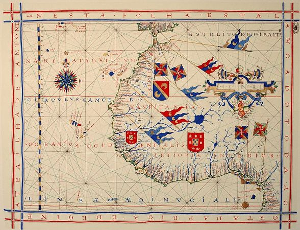
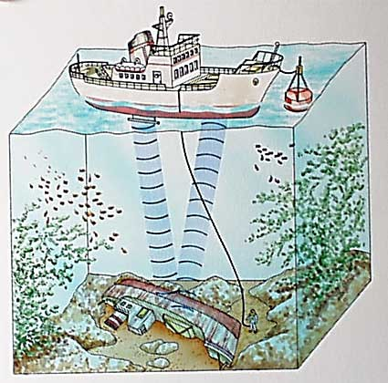
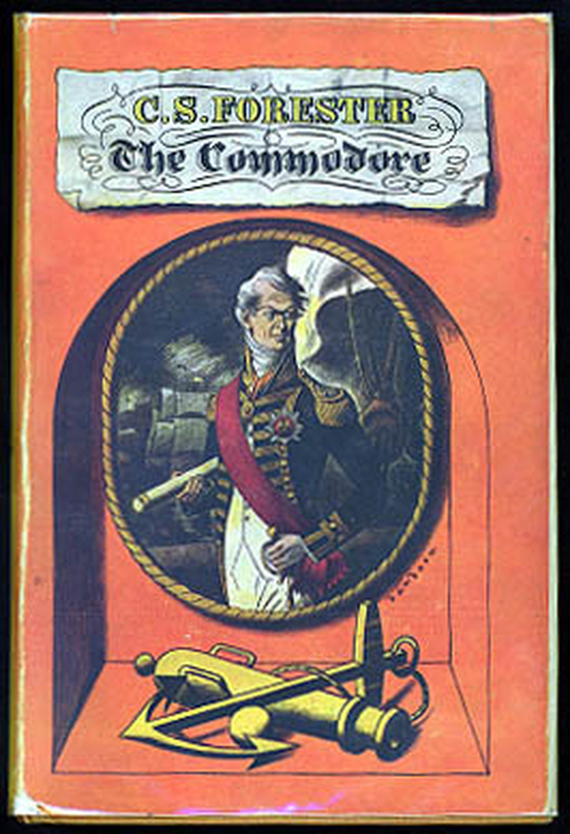
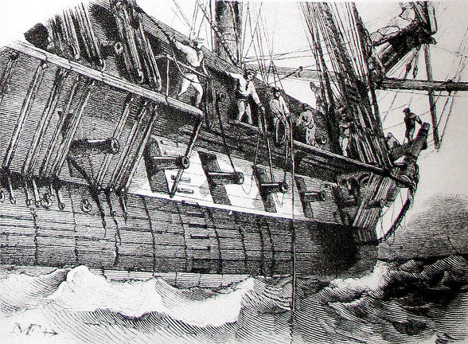
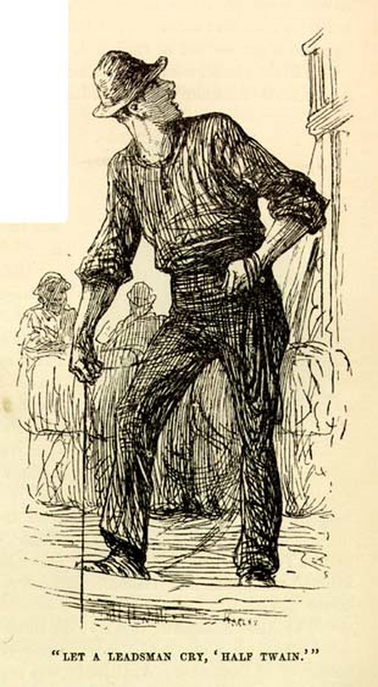
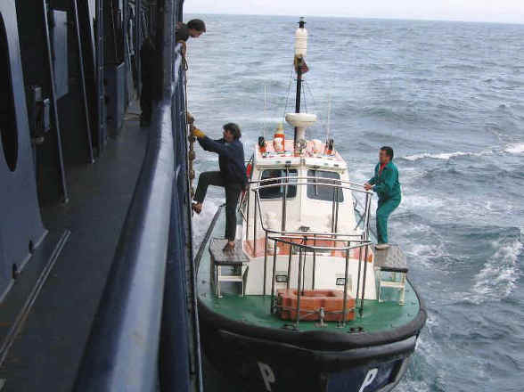
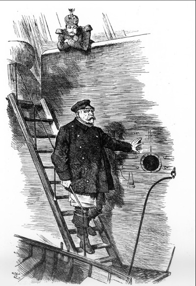

나폴레옹 시대에도 도선사가 연봉 킹이었을까 ?
게시: 2019-08-22T06:30:11+09:00
Uncharted 라는 영어 단어가 있습니다. 차트라고 하는 단어는 여러가지 뜻으로 사용됩니다. 가령 의사들도 환자 기록을 보면서 '차트'라고 부르고, 저같은 직장인은 프리젠테이션용 도면이나 표를 차트라고 부릅니다. 그러나 원래 차트라는 단어의 첫번째 뜻은 해도라는 뜻입니다. 즉, 육지에서의 지도는 map이라고 부르지만, 바다에서의 지도는 chart라고 부르는 것이지요.

그러니까 uncharted라는 말의 뜻은 '해도가 작성되지 않았다'는 뜻입니다. 흔히 미지의 영역을 뜻할 때 uncharted waters라고 합니다. 해도가 작성되지 않은 바다라... 상당히 매혹적으로 들리고, 어떻게 생각하면 경쟁이 전혀 없는 블루 오션 이야기처럼 들리기도 합니다. 그러나 uncharted라는 형용사는 기본적으로 '위험한' 이라는 뜻을 가지고 있습니다. 바다는 겉에서 보면 그냥 끝없는 소금물로 이루어진, 평면입니다. 그러니까 사실 길도 없어 보이고, 당연히 지도를 만들 수도 없습니다. 우리들은 보통 바닷물이 푸르다고 하지만, 사실 지역이나 날씨에 따라서 바닷물의 색깔은 다 다릅니다. 영어로 된 해양 소설을 보면, 바다를 표현할 때 grey sea (잿빛 바다)라든가 wine dark sea (검붉은 바다)라고 표현하는 경우가 많습니다. 뜻하는 바는, 대부분의 바다는 몰디브같은 특수한 곳을 빼고는, 그 바닥을 사람의 눈으로는 볼 수 없다는 것이지요.
(바다 속이 다 저렇게 훤히 들여다보인다면 해도는 필요없겠지요) 위에서 말한 차트, 그러니까 해도에는, 해안이나 섬의 모습 뿐만 아니라, 주요 항로의 바닷속 모습이 묘사되어 있습니다. 우리나라나 중국처럼 해양 활동이 왕성하지 않은 곳에서는 이렇게 바닷속 깊이가 묘사된 해도가 거의 없습니다. (혹은 있는데 제가 모르는 거지요) 이유는 간단합니다. 필요가 없기 때문이지요. 대부분의 경우, 중국이나 우리나라에서 많이 사용하는 평저선(바닥이 평평한 배)은 기껏해야 수면 아래 깊이가 1~2미터 정도입니다. 이 정도로라면, 굳이 해도가 없어도 어떤 곳은 위험한 항로인지 대략 눈으로 확인 가능합니다. 하지만 16세기 이후 나타나기 시작한 유럽의 대양 항해선은 그보다 더 깊은 홀수선 아래의 깊이가 더 깊습니다. 나폴레옹 시대의 가장 일반적인 전함인 74문의 함포를 장착한 3급 전함의 경우, 홀수선 아래 깊이가 약 7~9m 정도 되었다고 합니다. 이 정도가 되면, 간혹 가다 있을 수 있는 암초나 얕은 모래톱이 선박의 항해에 큰 위험이 될 수 있습니다. 요즘에는 1913년에 최초로 특허 등록된 바 있는 음향 수심측정기(echo sounding) 등의 신기술을 이용하여 해도가 매우 정밀하게 작성되어 있습니다. 게다가 GPS를 이용해서 선박의 위치를 정확히 파악할 수 있기 때문에, 요즘의 대형 상용 선박이 얕은 모래톱에 덜컥 좌초되는 경우가 거의 없습니다. 하지만 18~19세기의 군함에서는 어떻게 해도에도 제대로 표시되지 않은 미지의 바다를 헤쳐나갔을까요 ?

(원래 echo sounding이라는 기법은 빙산에 부딪혀 침몰한 타이타닉호의 비극을 막기 위해 독일에서 개발된 것인데, 결국 빙산 탐지에는 무용지물이었지만 수심 측정에는 탁월한 효과가 있음이 증명되었고, 이미 1920년대에 대서양 해저 지도 작성에 이용되었습니다.) 당시에는 인간 수심측정기가 사용되었습니다. 이름하여 leadsman이라고 했습니다. 여기서 lead는 리드라고 읽는 것이 아니고 레드라고 읽습니다. 즉, 납덩어리를 뜻하는 것입니다. 우리말로는 수심측정원, 측연수(測鉛手)라고 번역됩니다. 이 leadsman은 힘든 군함 생활에서도 매우 힘든 역할이었습니다. 항해 중에 항상 수심 측정이 필요하지는 않았으므로, 따로 leadsman의 역할만 수행하는 병사가 따로 있지는 않았고, 주로 midshipman 같은 초급 장교나 믿을만한 수병 중에서 돌아가며 이 고역을 수행했습니다. 이 측연수라는 역할이 왜 고역인지는 혼블로워 시리즈 중 'The Commodore' 편에 아주 잘 나와 있습니다.

(Commodore 초판본의 표지입니다)
Commodre by C.S. Forester (배경 1812년 발틱해) -------------- "깊은 14 (By the deep fourteen) !" 측연수가 외쳤다. 혼블로워는 측연수가 쇠사슬에 매달린 채 숙련된 강도로 납덩이를 저 앞으로 던지고는, 전함이 그 위를 통과하면서 거기에 달린 줄이 수직으로 될 때 깊이를 읽어내고, 줄을 끌어당겨 다시 새로 던질 준비를 하는 것을 지켜보았다. 그 작업은 무척이나 힘든 일이었고, 쉴 틈 없이 계속되는 고된 노동이었다. 게다가 측연수라는 직책은 100피트 (약 30m) 길이의 물이 뚝뚝 떨어지는 밧줄을 계속 당겨야 했으므로, 온몸이 흠뻑 젖기 마련이었다. 혼블로워는 하갑판의 생활이 어떤 것인지 잘 알고 있었다. 아마 저 남자는 옷을 말릴 기회가 거의 없을 것이었다. 그는 펠류 함장의 프리깃함 인디퍼티거블(Indefatigable)호가 비스케이(Biscay, 스페인의 대서양 쪽 만입니다 : 역주) 만의 거친 파도 속을 뚫고 들어가 프랑스 군함 드롸 드 롬므 (Driots de l'homme, 인권이라는 뜻입니다 : 역주) 호를 파괴하던 날 밤, 당시 사관후보생이던 자신이 수심 측정 작업을 하던 것을 기억할 수 있었다. 그날 밤 그는 뼈 속까지 얼어붙어 손가락에 감각이 거의 없을 지경이었기 때문에, 측정 밧줄에 묶어놓은 표시의 감촉, 그러니까 하얀 캘리코 면포나 구멍 뚫인 가죽, 그 밖의 직물들의 차이를 느낄 수 없을 정도였다. 그는 이젠 해보려고 해도 저렇게 납덩이를 던질 수 없을 것 같았고, 밧줄에 묶어놓은 표시의 임의적인 순서를 기억해낼 수 없는 것은 확실했다. 그는 부시 함장에게 측연수를 적절한 간격으로 교대시켜 주고, 그들이 옷을 말릴 수 있도록 특별한 시설을 배려해 줄 정도의 인간미와 상식이 있기를 바랬다. 하지만 코모도어(임시 제독 정도의 계급입니다 역주)인 그가 그런 일에 직접 간섭할 수는 없었다. 그 전함의 내부 살림은 부시 함장의 개인적인 책임이었고, 누구라도 간섭한다면 부당하게 여길 것이 당연했다. 코모도어의 직책도 그리 좋은 것만은 아니었다. "정확히 10 (By the mark ten) !" 측연수가 외쳤다. -----------------------------------------------------------------------

(프랑스 프리깃함에서의 측연수의 작업. 1844년의 그림입니다) 당시에 측연수가 수심을 측정하는 방법은 아주 단순했습니다. 항해 중인 배에서, 끝에 큼직한 납추를 매단 긴 밧줄을 배의 진행 방향으로 힘껏 집어던지고는 다시 슬슬 잡아 당겨 팽팽함을 유지시킵니다. 배가 앞으로 전진하면서, 바닥에 가라앉은 납추에 달린 밧줄이 측연수의 손에서 수직이 되는 순간, 밧줄에 표시된 길이를 읽는 것입니다. 간단해 보이지요 ? 하지만 몇가지 문제가 있었습니다. 첫째, 바닷속 지형은 뭐가 어떻게 되어 있는지 알 도리가 없었으므로, 저렇게 던지고 읽고 당기고 하는 중노동을 쉴 틈 없이 계속 해야 했습니다. 괜히 뱃밥 먹는게 힘들다는 것이 아니지요. 둘째, 밧줄이 수직이 되는 순간에 밧줄의 어디까지가 물에 잠겼는지 순간적으로 읽어내는 것은 쉬운 일이 아니었습니다. 줄자처럼 밧줄에 길이가 눈금과 숫자로 표시된 것도 아니고, 또 표시가 되어 있다고 하더라도, 칠흑처럼 어두운 야간에는 읽을 수가 없었으니까요. 그래서, 저 위에 혼블로워 회상 속에서 처럼, 길이 표시는 밧줄 중간중간에 특색있는 직물을 묶어서 했습니다. 즉 가죽, 캘리코 면포(calico), 서지(serge, 능직물의 일종)를 2, 3, 5, 7, 10, 13, 15, 17, 20 패덤(fathom, 약 1.83m)의 일정한 간격으로 묶어두어, 밧줄을 당기면서 표시 매듭을 만져보고 그 촉각으로 무슨 직물이 몇번째 간격으로 묶여 있는지만 알면, 지금의 깊이가 몇 패덤인지 알아낼 수 있었습니다. 그러자면 그 직물의 순서와 그 각각의 간격을 외우고 있어야 했습니다. 혼블로워가 지금은 못 외운다고 혼자 생각하는 것이 바로 그 순서입니다.

그렇게 측정할 때, 만약 수심이 정확히 10 패덤이면 "By the mark 10 !" 이라고 외치고, 만약 13과 15 사이면 "By the deep 14 !" 이라고 외쳤습니다. 그러니까 측연수는 몸도 힘들고, 젖고, 손바닥도 아픈데다 목청까지 아팠겠지요. 정말 고된 작업이었을 것 같습니다.
(이 만화 기억들 나시는지... 저 뒤의 미시시피 강을 운항하는 독특한 페리선에서도 수심 측정을 해야 했습니다.) 이야기가 약간 옆으로 샙니다만, 미국 미시시피 강을 운항하는 배에서는 이렇게 외치는 수심의 깊이 중 일부 숫자는 나름대로 전통적으로 색다르게 불렀습니다. 마치 테니스 점수에서 0을 love라고 부르는 것과 마찬가지입니다. 그 중 숫자 2는 two라고 부르지 않고 twain이라고 불렀다고 합니다. 그러니까 수심이 정확히 2 패덤 (약 3.6m)일 경우, "By the mark twain")하고 외치는 소리가 강변까지 들렸습니다. 톰 소여의 모험이나 허클베리 핀의 모험을 쓴 미국의 작가 마크 트웨인(Mark Twain)의 이름은 본명이 아니라 필명이라는 것은 많이들 알고 계실 겁니다. 이제 그 이름이 어디서 나온 것인지도 아셨지요 ?
(우리가 양키 소년 문학 작가라고 무시하기 쉬운 마크 트웨인... 그러나 세계 문학사에서 정말 존경받는 인물이고, 또 다시 읽어봐도 정말 재미있습니다.) 이렇게 측연수가 나서야 할 때는 물론 바다 깊이가 얕다고 알려진 곳을 조심조심 통과할 때 이야기입니다. 그러자면 그래도 어느 정도 바다의 깊고 얕음이 표시된 해도가 있어야 했습니다. 물론 드넓고 깊은 바다의 모든 곳에 대해 이런 식으로 해도를 만들 필요는 없었고, 그럴 수도 없었습니다. 다만 항구 주변이나 해협 주변, 강의 입구 등에 대해서는 세심한 해도 작성이 필요했습니다. 그렇다고는 해도, 인공위성도 컴퓨터도 없는 시절에 그런 해도가 정확할리 만무했습니다. 그랬기 때문에 필요한 것이 바로 수로안내인, 영어로는 파일럿(pilot), 요즘 명칭으로는 도선사입니다. 육지와 바다가 만나는 곳인 항구는 당연히 바닥이 얕고, 또 당연히 조석 간만의 차이가 있고, 또 언제 어느 정도까지 물이 차고 빠지는지도 항구마다 특색이 있습니다. 한마디로 말해 무척이나 위험하다는 이야기지요. 여러분이 자동차 운전을 배우실 때도, 큰 대로를 운전하는 것보다 주차할 때가 더 위험하고 어렵다는 것을 느끼셨을 겁니다. 특히나 자기가 차를 세우려는 공간의 바로 옆에 엄청나게 비싼 마이바흐 같은 차가 주차되어 있다면 정말 주차할 때 식은 땀이 날 것 같습니다. 선박, 특히 큰 선박도 그렇습니다. 사실 망망대해에서야 바닥이건 다른 배건 걱정할 것 없이 그냥 항해만 하면 되지만, 항구에서는 바닥도 얕고, 예상치 못한 거센 해류가 있을 수도 있고, 무엇보다도 다른 커다란 배들이 (망망대해에 비하면) 엄청난 밀도로 옹기종기 모여 있습니다. 더군다나 그렇게 모인 배들은 무척 비싼 것들이고, 배라는 물건에는 브레이크도 없고 선회도 쉽지 않으니까 까딱 잘못하면 대형 사고, 즉 엄청난 금전적 손실이 발생하게 됩니다. 그래서 각 항구에서는 그런 사고를 막기 위해, 배가 항내에 들어올 때는 의무적으로 수로안내인을 승선시켜 배를 안내하도록 했습니다. 이 수로안내인의 역할은 너무나 중요했기 때문에 아무나 시킬 수는 없었고, 그 항구에서 매우 긴 시간을 보내어 정말 항구 바닥을 '손바닥처럼' 꿰고 있는 익숙한 뱃사람에게 면허를 주어 활동하게 했습니다. 수로안내인, 파일럿, 또는 도선사라고 불리는 직업은 자신이 담당하는 항구에 대해 전문가이기도 했지만, 항구를 드나드는 커다란 선박의 운항에 대해서도 전문가여야 했습니다. 작은 어선의 움직임과 커다란 전함의 움직임은 다를 수 밖에 없으니까요. 그래서 보통 그 항구에서 잔뼈가 굵은 선장에게 그런 일을 맡겼다고 합니다.

(정작 도선사 본인에게 가장 위험한 순간은 움직이는 작은 보트에서 움직이는 거대한 선박으로 재주껏 올라타는 일이라고 하네요. 이는 18세기나 21세기나 거의 변하지 않았다고 합니다.) 요즘 가끔 신문에 나오는 직업을 보면, 의사나 변호사가 연봉 킹이 아니고, 항상 변리사, 관세사들과 함께 도선사가 연봉 최상위 직업으로 나옵니다. 물론 이것은 영업을 하는 해당 사무소 전체의 연봉일 뿐 그 사무소에 고용된 변리사/관세사/도선사 개개인의 연봉은 아니라고 합니다만, 어쨌거나 높은 연봉을 받는 것은 맞는 모양입니다. 나폴레옹 시대에도 도선사의 연봉이 그렇게 높았을까요 ? 죄송합니다. 제목은 낚시였습니다. 저도 잘 모르겠습니다. 하지만 대개 도선사는 전직 선장, 그것도 경험 많은 선장 중에서 선발되었으므로, 일단 분명히 신사 계급에 들어가는 중산층이었던 것은 확실합니다. 그리고 콧대높은 영국 로열 네이비도 어느 항구건 외국 항구에 들어갈 때는 항상 해당 항구의 도선사의 지시를 따라야 했고, 또 영국 해군 함장도 도선사에게 예의를 다해야 했습니다. 결국 나폴레옹 시대에도 상당히 존경받는 직업이었던 것은 맞는 모양입니다. 끝으로 도선사에 대해서는 아주 유명한 만화, 즉 캐리커쳐가 하나 있습니다. 이런저런 역사책이나 심지어는 역사 교과서에도 나오는 만화입니다.

이 만화는 영국의 전통있는 잡지인 펀치(Punch) 지에 실린 것으로, 기사 작위도 받은 정치 만화가인 존 테니엘(Sir John Tenniel) 경이 그린 것입니다. 보시면 다들 짐작하시겠지만, 바로 프러시아의 철혈재상 비스마르크가 황제 빌헬름 2세와 불화를 일으킨 끝에 재상직을 사임하는 장면을 그린 것입니다. 선장인 빌헬름 1세를 도와 독일 제국이라는 거함을 만들고 운항해온 도선사인 비스마르크가, 철부지 신임 선장 빌헬름 2세의 지휘를 도저히 참지 못해 배에서 내리는 것으로 묘사되었지요. 도선사가 없는 배가 과연 어찌 되었는지는 제1차 세계대전 결과를 보시면 아실 겁니다.